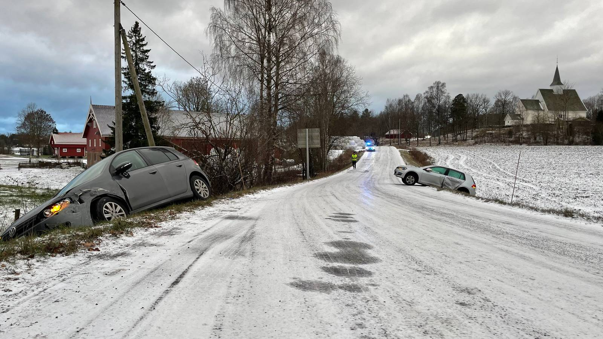

Introduction
Welcome to the RELINK innovation workshop on the 22nd and 23rd of September!
During this workshop, you will be guided step by step through the design and innovation process in order to find creative solution for the protection of personal data in smart households. You can read more about the RELINK project here Links to an external site..
Enrollment to the workshop is open to 40 students, please find the sign up sheet in this module. You will be paired in groups of 4 and work as a team.
Keep an eye on this module as some sources and materials will be added in the next two weeks and ask any question in the discussion tab here on canvas!
FAQ
When is the workshop?
22nd and 23rd of September 2022 from 08:30 to 17:30
Where is the workshop?
22nd of September: Oslomet p46, Athene 1,
Karen Grude Kohts auditorium (PA113)
23rd of September: Oslomet p46, ProLab (PA124)
What do I need to do to get the assignment point?
- Fill in the entry survey
- Participate to the two days workshop
- Upload a picture of you and your group (the one you worked with during the workshop) on canvas after the workshop
Where do I sign up?
You can find the sign up sheet in this module
When is the deadline for signing up?
The deadline for signing up is on the 15th of September at 12:00
What do I need to bring?
Yourself, something to write on, something to write with, your pc.
Is there a deadline for uploading the picture?
The picture should be uploaded between the 24th of September and the 3rd of October
Anything else I need to do?
Yes! Since this workshop is part of a research project, every participant is required to sign a consent form in order to allow the researchers to process the data collected. You will find the form here on canvas, so read it carefully and only sign up if you are comfortable with it! We will provide the form on site during the days of the workshop to all the participants.
